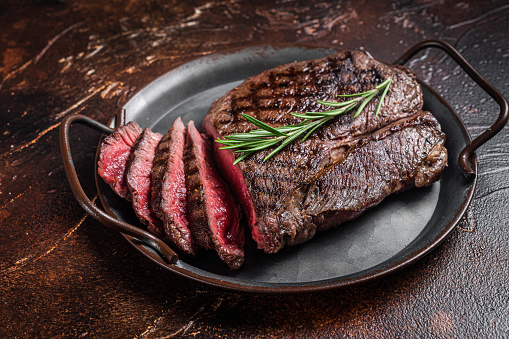

Steak Marinade

The Family Recipe
This steak marinade is a family recipe that has been developed only over the last 5 years. In this short time, it's made me famous in our close circle, but until now I've never shared it with anyone.
Marinating a steak before cooking serves two purposes: It helps tenderize the meat and adds just the right amount of flavor. Some top-quality steaks can go without a marinade, since they're already full of meaty flavor and, with the right prep, end up juicy and tender without any help from a marinade. Budget-friendly steaks, however, benefit tremendously from marination. You'll be shocked at the difference a good marinade makes!
Ingredients
- ½ cup olive oil
- ⅓ cup soy sauce
- ⅓ cup fresh lemon juice
- ¼ cup Worcestershire sauce
- 3 tablespoons dried basil
- 1 ½ tablespoons garlic powder
- 1 ½ tablespoons dried parsley flakes
- 1 teaspoon ground white pepper
Steps
- Place olive oil, soy sauce, lemon juice, Worcestershire sauce, basil, garlic powder, parsley, white pepper, minced garlic, and hot pepper sauce in a blender; blend on high speed until thoroughly combined, about 30 seconds.
- Thinner cuts, such as skirt or flanks steaks, should be marinated for 2-4 hours.
- Tougher cuts, such as top sirloin or sirloin tip, will benefit from marinating overnight (about 8 hours).